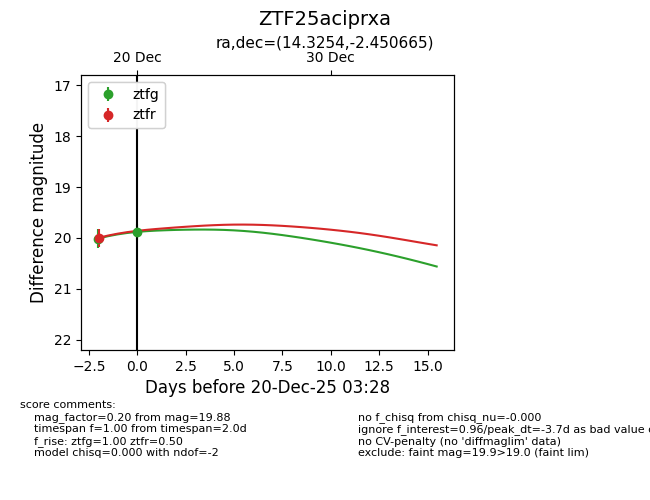
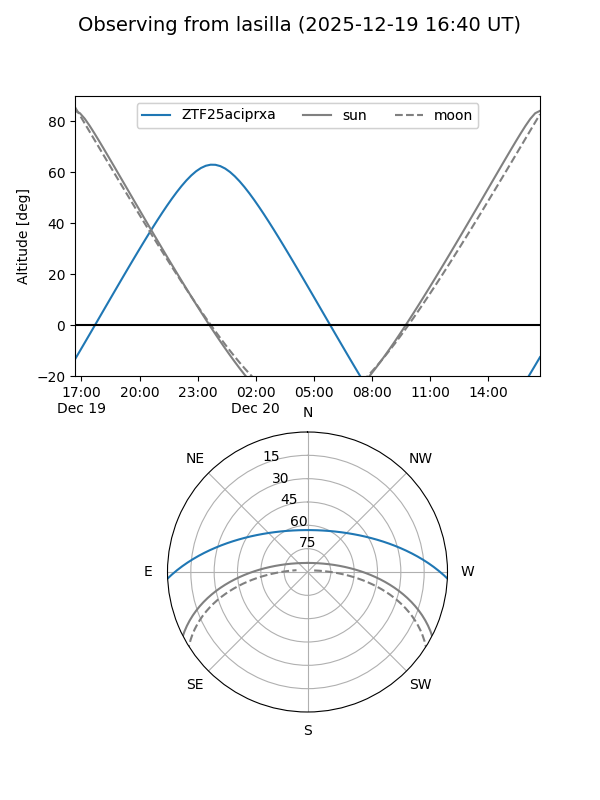
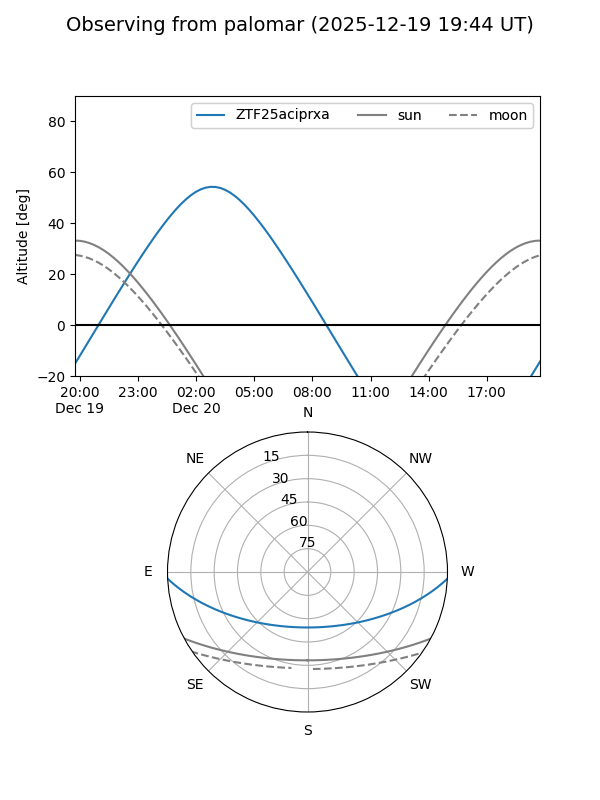

ZTF25aciprxa
Target ZTF25aciprxa at 2025-12-18 10:45
Aliases and brokers:
FINK: fink-portal.org/ZTF25aciprxa
Lasair: lasair-ztf.lsst.ac.uk/objects/ZTF25aciprxa
ALeRCE: alerce.online/object/ZTF25aciprxa
alt names
ZTF25aciprxa (ztf,fink_ztf)
Coordinates:
equatorial (ra, dec) = 14.3254,-2.45066
equatorial (HMS+DMS) = 00:57:18.09,-02:27:02.39
galactic (l, b) = (126.4363,-65.28251)
Photometry
last ztfg=20.01
1 ztfg detections
Lightcurve

Visibility


Additional plots